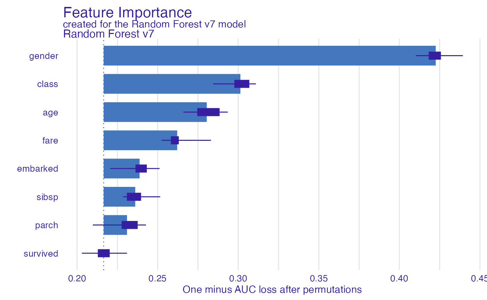
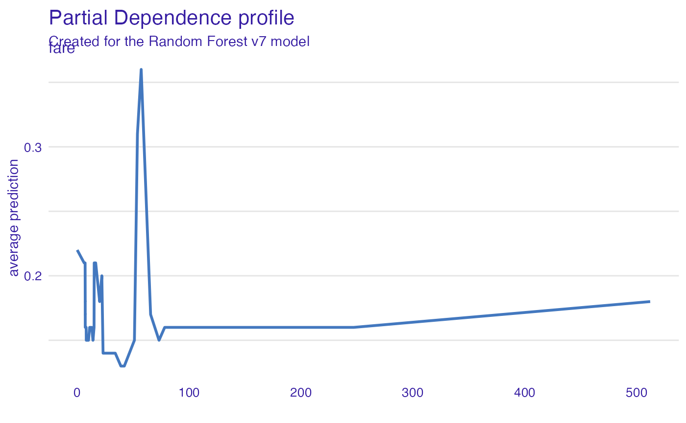
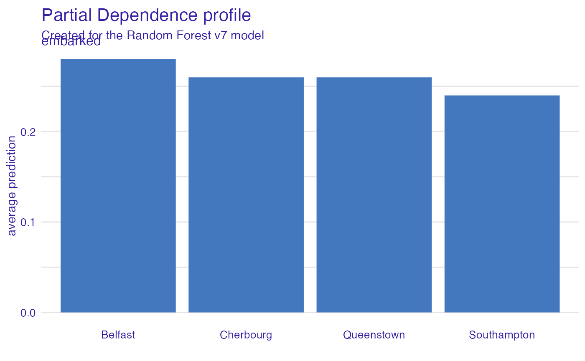
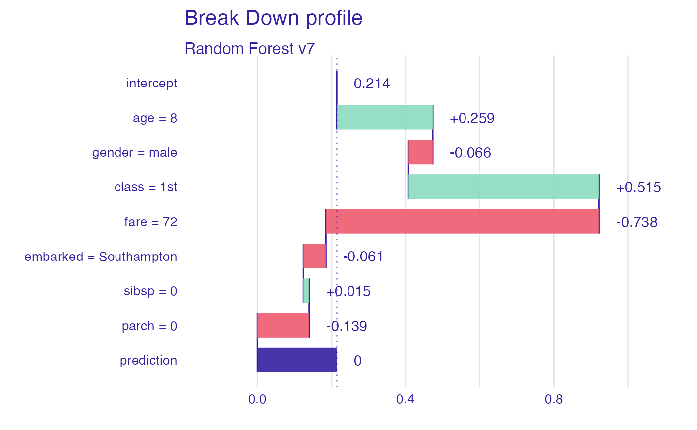
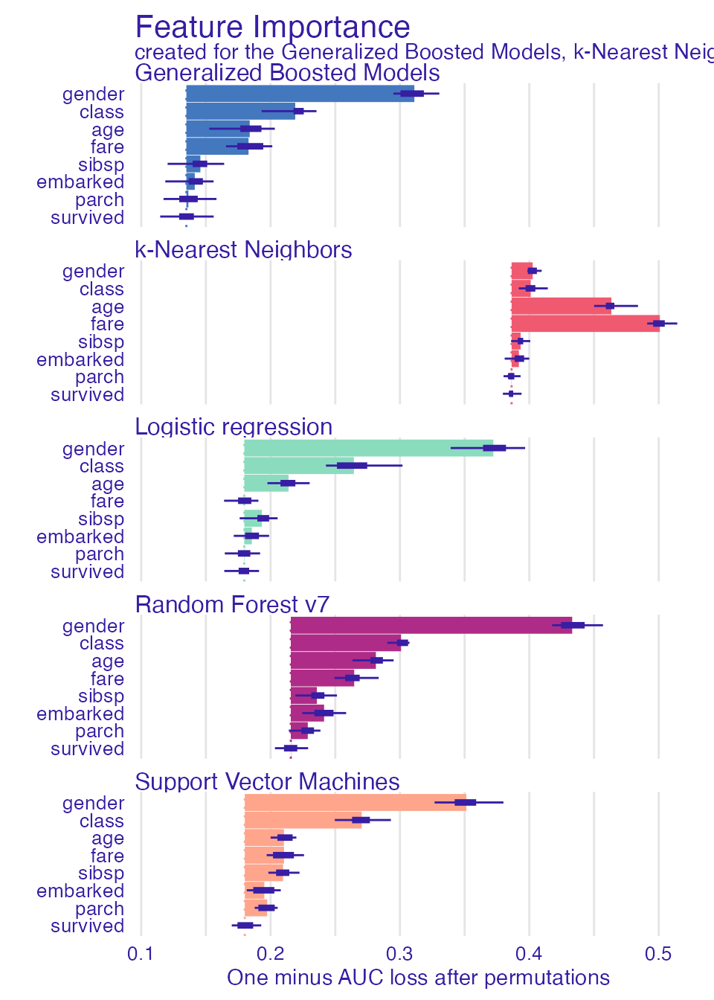
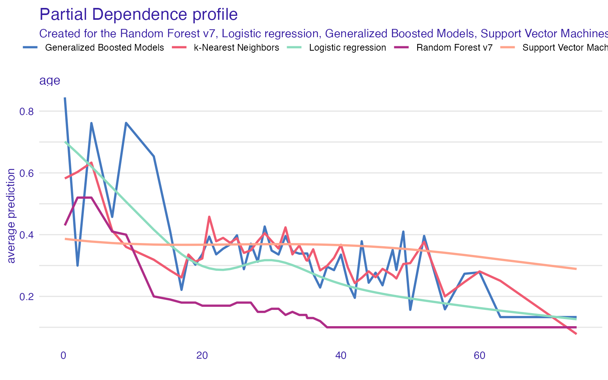
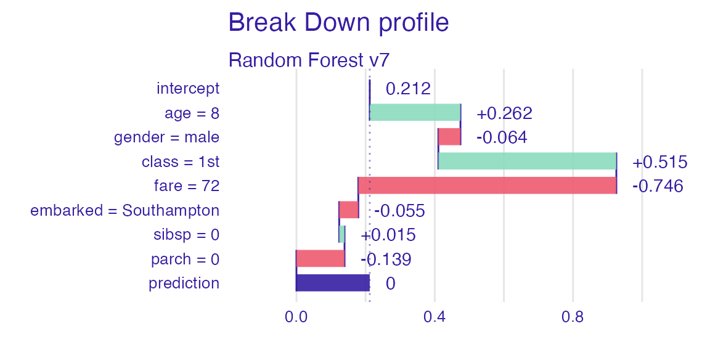
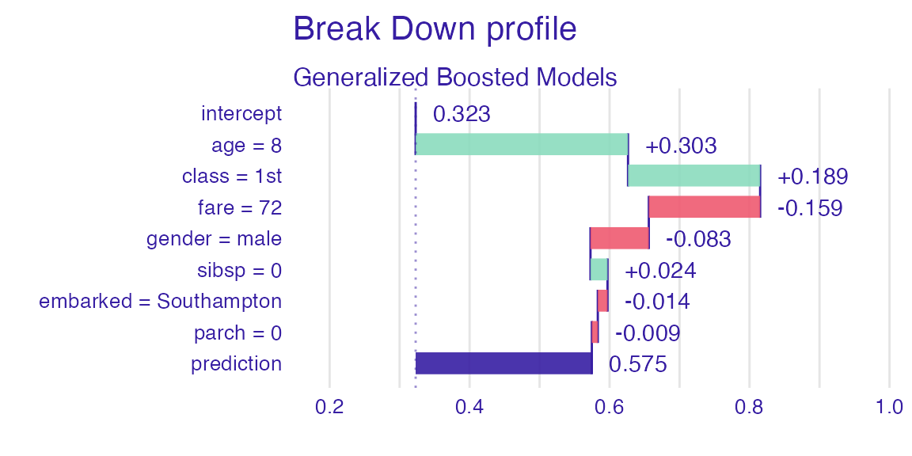

Survival on the RMS Titanic
Przemyslaw Biecek
2023-03-22
Source:vignettes/vignette_titanic.Rmd
vignette_titanic.RmdData for Titanic survival
Let’s see an example for DALEX package for
classification models for the survival problem for Titanic dataset. Here
we are using a dataset titanic available in the
DALEX package. Note that this data was copied from the
stablelearner package.
#> gender age class embarked fare sibsp parch survived
#> 1 male 42 3rd Southampton 7.11 0 0 0
#> 2 male 13 3rd Southampton 20.05 0 2 0
#> 3 male 16 3rd Southampton 20.05 1 1 0
#> 4 female 39 3rd Southampton 20.05 1 1 1
#> 5 female 16 3rd Southampton 7.13 0 0 1
#> 6 male 25 3rd Southampton 7.13 0 0 1Model for Titanic survival
Ok, not it’s time to create a model. Let’s use the Random Forest model.
# prepare model
library("ranger")
model_titanic_rf <- ranger(survived ~ gender + age + class + embarked +
fare + sibsp + parch, data = titanic_imputed,
classification = TRUE)
model_titanic_rf#> Ranger result
#>
#> Call:
#> ranger(survived ~ gender + age + class + embarked + fare + sibsp + parch, data = titanic_imputed, classification = TRUE)
#>
#> Type: Classification
#> Number of trees: 500
#> Sample size: 2207
#> Number of independent variables: 7
#> Mtry: 2
#> Target node size: 1
#> Variable importance mode: none
#> Splitrule: gini
#> OOB prediction error: 20.03 %Explainer for Titanic survival
The third step (it’s optional but useful) is to create a
DALEX explainer for the random forest model.
library("DALEX")
explain_titanic_rf <- explain(model_titanic_rf,
data = titanic_imputed,
y = titanic_imputed$survived,
label = "Random Forest v7",
colorize = FALSE)#> Preparation of a new explainer is initiated
#> -> model label : Random Forest v7
#> -> data : 2207 rows 8 cols
#> -> target variable : 2207 values
#> -> predict function : yhat.ranger will be used ( default )
#> -> predicted values : No value for predict function target column. ( default )
#> -> model_info : package ranger , ver. 0.14.1 , task classification ( default )
#> -> predicted values : numerical, min = 0 , mean = 0.213865 , max = 1
#> -> residual function : difference between y and yhat ( default )
#> -> residuals : numerical, min = -1 , mean = 0.1082918 , max = 1
#> A new explainer has been created!Variable importance plots
Use the variable_importance() explainer to present the
importance of particular features. Note that
type = "difference" normalizes dropouts, and now they all
start in 0.
vi_rf <- model_parts(explain_titanic_rf)
head(vi_rf)#> variable mean_dropout_loss label
#> 1 _full_model_ 0.2164656 Random Forest v7
#> 2 survived 0.2164564 Random Forest v7
#> 3 parch 0.2309825 Random Forest v7
#> 4 sibsp 0.2360850 Random Forest v7
#> 5 embarked 0.2387941 Random Forest v7
#> 6 fare 0.2621238 Random Forest v7
plot(vi_rf)
Variable effects
As we see the most important feature is Sex. Next three
important features are Pclass, Age and
Fare. Let’s see the link between model response and these
features.
Such univariate relation can be calculated with
variable_effect().
Age
Kids 5 years old and younger have a much higher survival probability.
vr_age <- model_profile(explain_titanic_rf, variables = "age")
head(vr_age)#> $cp_profiles
#> Top profiles :
#> gender age class embarked fare sibsp parch survived
#> 2068 male 0.1666667 victualling crew Southampton 0 0 0 0
#> 2068.1 male 2.0000000 victualling crew Southampton 0 0 0 0
#> 2068.2 male 4.0000000 victualling crew Southampton 0 0 0 0
#> 2068.3 male 7.0000000 victualling crew Southampton 0 0 0 0
#> 2068.4 male 9.0000000 victualling crew Southampton 0 0 0 0
#> 2068.5 male 13.0000000 victualling crew Southampton 0 0 0 0
#> _yhat_ _vname_ _ids_ _label_
#> 2068 0 age 2068 Random Forest v7
#> 2068.1 0 age 2068 Random Forest v7
#> 2068.2 0 age 2068 Random Forest v7
#> 2068.3 0 age 2068 Random Forest v7
#> 2068.4 0 age 2068 Random Forest v7
#> 2068.5 0 age 2068 Random Forest v7
#>
#>
#> Top observations:
#> gender age class embarked fare sibsp parch survived
#> 2068 male 33 victualling crew Southampton 0.0000 0 0 0
#> 689 male 38 3rd Southampton 56.0911 0 0 1
#> 886 male 41 3rd Southampton 7.0206 0 0 0
#> 1177 male 74 3rd Southampton 7.1506 0 0 0
#> 1871 male 42 victualling crew Southampton 0.0000 0 0 0
#> 957 male 21 3rd Southampton 7.1806 0 0 0
#> _yhat_ _label_ _ids_
#> 2068 0 Random Forest v7 1
#> 689 1 Random Forest v7 2
#> 886 0 Random Forest v7 3
#> 1177 0 Random Forest v7 4
#> 1871 0 Random Forest v7 5
#> 957 0 Random Forest v7 6
#>
#> $agr_profiles
#> Top profiles :
#> _vname_ _label_ _x_ _yhat_ _ids_
#> 1 age Random Forest v7 0.1666667 0.50 0
#> 2 age Random Forest v7 2.0000000 0.56 0
#> 3 age Random Forest v7 4.0000000 0.56 0
#> 4 age Random Forest v7 7.0000000 0.49 0
#> 5 age Random Forest v7 9.0000000 0.40 0
#> 6 age Random Forest v7 13.0000000 0.19 0
#>
#> $color
#> [1] "#4378bf"
plot(vr_age)
Passenger class
Passengers in the first-class have much higher survival probability.
vr_class <- model_profile(explain_titanic_rf, variables = "class")
plot(vr_class)
Fare
Very cheap tickets are linked with lower chances.
vr_fare <- variable_profile(explain_titanic_rf, variables = "fare")
plot(vr_fare)
Embarked
Passengers that embarked from C have the highest survival.
vr_embarked <- model_profile(explain_titanic_rf, variables = "embarked")
plot(vr_embarked)
Instance level explanations
Let’s see break-down explanation for model predictions for 8 years old male from 1st class that embarked from port C.
new_passanger <- data.frame(
class = factor("1st", levels = c("1st", "2nd", "3rd", "deck crew", "engineering crew", "restaurant staff", "victualling crew")),
gender = factor("male", levels = c("female", "male")),
age = 8,
sibsp = 0,
parch = 0,
fare = 72,
embarked = factor("Southampton", levels = c("Belfast", "Cherbourg", "Queenstown", "Southampton"))
)
sp_rf <- predict_parts(explain_titanic_rf, new_passanger)
plot(sp_rf)
It looks like the most important feature for this passenger is
age and sex. After all his odds for survival
are higher than for the average passenger. Mainly because of the young
age and despite being a male.
More models
Let’s train more models for survival.
Logistic regression
library("rms")
model_titanic_lmr <- lrm(survived ~ class + gender + rcs(age) + sibsp +
parch + fare + embarked, titanic_imputed)
explain_titanic_lmr <- explain(model_titanic_lmr, data = titanic_imputed,
y = titanic_imputed$survived,
predict_function = function(m,x)
predict(m, x, type = "fitted"),
label = "Logistic regression")#> Preparation of a new explainer is initiated
#> -> model label : Logistic regression
#> -> data : 2207 rows 8 cols
#> -> target variable : 2207 values
#> -> predict function : function(m, x) predict(m, x, type = "fitted")
#> -> predicted values : No value for predict function target column. ( default )
#> -> model_info : package rms , ver. 6.5.0 , task classification ( default )
#> -> predicted values : numerical, min = 0.002671631 , mean = 0.3221568 , max = 0.9845724
#> -> residual function : difference between y and yhat ( default )
#> -> residuals : numerical, min = -0.9845724 , mean = -2.491758e-09 , max = 0.9715125
#> A new explainer has been created!Generalized Boosted Models (GBM)
library("gbm")
model_titanic_gbm <- gbm(survived ~ class + gender + age + sibsp +
parch + fare + embarked, data = titanic_imputed,
n.trees = 15000)#> Distribution not specified, assuming bernoulli ...
explain_titanic_gbm <- explain(model_titanic_gbm, data = titanic_imputed,
y = titanic_imputed$survived,
predict_function = function(m,x)
predict(m, x, n.trees = 15000, type = "response"),
label = "Generalized Boosted Models",
colorize = FALSE)#> Preparation of a new explainer is initiated
#> -> model label : Generalized Boosted Models
#> -> data : 2207 rows 8 cols
#> -> target variable : 2207 values
#> -> predict function : function(m, x) predict(m, x, n.trees = 15000, type = "response")
#> -> predicted values : No value for predict function target column. ( default )
#> -> model_info : package gbm , ver. 2.1.8.1 , task classification ( default )
#> -> predicted values : numerical, min = 0.0004911074 , mean = 0.3229161 , max = 0.9985837
#> -> residual function : difference between y and yhat ( default )
#> -> residuals : numerical, min = -0.9657513 , mean = -0.0007592975 , max = 0.9865362
#> A new explainer has been created!Support Vector Machines (SVM)
library("e1071")
model_titanic_svm <- svm(survived ~ class + gender + age + sibsp +
parch + fare + embarked, data = titanic_imputed,
type = "C-classification", probability = TRUE)
explain_titanic_svm <- explain(model_titanic_svm, data = titanic_imputed,
y = titanic_imputed$survived,
label = "Support Vector Machines",
colorize = FALSE)#> Preparation of a new explainer is initiated
#> -> model label : Support Vector Machines
#> -> data : 2207 rows 8 cols
#> -> target variable : 2207 values
#> -> predict function : yhat.svm will be used ( default )
#> -> predicted values : No value for predict function target column. ( default )
#> -> model_info : package e1071 , ver. 1.7.13 , task classification ( default )
#> -> predicted values : numerical, min = 0.0890025 , mean = 0.3261746 , max = 0.9632474
#> -> residual function : difference between y and yhat ( default )
#> -> residuals : numerical, min = -0.8679337 , mean = -0.004017876 , max = 0.9109975
#> A new explainer has been created!k-Nearest Neighbors (kNN)
library("caret")
model_titanic_knn <- knn3(survived ~ class + gender + age + sibsp +
parch + fare + embarked, data = titanic_imputed, k = 5)
explain_titanic_knn <- explain(model_titanic_knn, data = titanic_imputed,
y = titanic_imputed$survived,
predict_function = function(m,x) predict(m, x)[,2],
label = "k-Nearest Neighbors",
colorize = FALSE)#> Preparation of a new explainer is initiated
#> -> model label : k-Nearest Neighbors
#> -> data : 2207 rows 8 cols
#> -> target variable : 2207 values
#> -> predict function : function(m, x) predict(m, x)[, 2]
#> -> predicted values : No value for predict function target column. ( default )
#> -> model_info : package Model of class: knn3 package unrecognized , ver. Unknown , task regression ( default )
#> -> predicted values : numerical, min = 0 , mean = 0.3061413 , max = 1
#> -> residual function : difference between y and yhat ( default )
#> -> residuals : numerical, min = -0.8333333 , mean = 0.01601551 , max = 0.9285714
#> A new explainer has been created!Variable performance
vi_rf <- model_parts(explain_titanic_rf)
vi_lmr <- model_parts(explain_titanic_lmr)
vi_gbm <- model_parts(explain_titanic_gbm)
vi_svm <- model_parts(explain_titanic_svm)
vi_knn <- model_parts(explain_titanic_knn)
plot(vi_rf, vi_lmr, vi_gbm, vi_svm, vi_knn, bar_width = 4)
Single variable
vr_age_rf <- model_profile(explain_titanic_rf, variables = "age")
vr_age_lmr <- model_profile(explain_titanic_lmr, variables = "age")
vr_age_gbm <- model_profile(explain_titanic_gbm, variables = "age")
vr_age_svm <- model_profile(explain_titanic_svm, variables = "age")
vr_age_knn <- model_profile(explain_titanic_knn, variables = "age")
plot(vr_age_rf$agr_profiles,
vr_age_lmr$agr_profiles,
vr_age_gbm$agr_profiles,
vr_age_svm$agr_profiles,
vr_age_knn$agr_profiles)
Instance level explanations
sp_rf <- predict_parts(explain_titanic_rf, new_passanger)
plot(sp_rf)
sp_lmr <- predict_parts(explain_titanic_lmr, new_passanger)
plot(sp_lmr)
sp_gbm <- predict_parts(explain_titanic_gbm, new_passanger)
plot(sp_gbm)
sp_svm <- predict_parts(explain_titanic_svm, new_passanger)
plot(sp_svm)
sp_knn <- predict_parts(explain_titanic_knn, new_passanger)
plot(sp_knn)
Session info
#> R version 4.2.3 (2023-03-15)
#> Platform: x86_64-apple-darwin17.0 (64-bit)
#> Running under: macOS Big Sur ... 10.16
#>
#> Matrix products: default
#> BLAS: /Library/Frameworks/R.framework/Versions/4.2/Resources/lib/libRblas.0.dylib
#> LAPACK: /Library/Frameworks/R.framework/Versions/4.2/Resources/lib/libRlapack.dylib
#>
#> locale:
#> [1] en_US.UTF-8/en_US.UTF-8/en_US.UTF-8/C/en_US.UTF-8/en_US.UTF-8
#>
#> attached base packages:
#> [1] stats graphics grDevices utils datasets methods base
#>
#> other attached packages:
#> [1] caret_6.0-94 e1071_1.7-13 gbm_2.1.8.1 rms_6.5-0
#> [5] SparseM_1.81 ggplot2_3.4.1 lattice_0.20-45 survival_3.5-3
#> [9] Hmisc_5.0-1 ranger_0.14.1 DALEX_2.5.1
#>
#> loaded via a namespace (and not attached):
#> [1] nlme_3.1-162 fs_1.6.1 lubridate_1.9.2
#> [4] rprojroot_2.0.3 tools_4.2.3 backports_1.4.1
#> [7] bslib_0.4.2 utf8_1.2.3 R6_2.5.1
#> [10] rpart_4.1.19 colorspace_2.1-0 nnet_7.3-18
#> [13] withr_2.5.0 tidyselect_1.2.0 gridExtra_2.3
#> [16] compiler_4.2.3 textshaping_0.3.6 cli_3.6.0
#> [19] quantreg_5.94 htmlTable_2.4.1 desc_1.4.2
#> [22] sandwich_3.0-2 labeling_0.4.2 sass_0.4.5
#> [25] scales_1.2.1 checkmate_2.1.0 polspline_1.1.22
#> [28] mvtnorm_1.1-3 proxy_0.4-27 pkgdown_2.0.7
#> [31] systemfonts_1.0.4 stringr_1.5.0 digest_0.6.31
#> [34] foreign_0.8-84 ingredients_2.3.0 rmarkdown_2.20
#> [37] iBreakDown_2.0.1 base64enc_0.1-3 pkgconfig_2.0.3
#> [40] htmltools_0.5.4 parallelly_1.34.0 fastmap_1.1.1
#> [43] highr_0.10 htmlwidgets_1.6.2 rlang_1.1.0
#> [46] rstudioapi_0.14 jquerylib_0.1.4 farver_2.1.1
#> [49] generics_0.1.3 zoo_1.8-11 jsonlite_1.8.4
#> [52] ModelMetrics_1.2.2.2 dplyr_1.1.1 magrittr_2.0.3
#> [55] Formula_1.2-5 Matrix_1.5-3 Rcpp_1.0.10
#> [58] munsell_0.5.0 fansi_1.0.4 lifecycle_1.0.3
#> [61] pROC_1.18.0 stringi_1.7.12 multcomp_1.4-23
#> [64] yaml_2.3.7 MASS_7.3-58.2 plyr_1.8.8
#> [67] recipes_1.0.5 grid_4.2.3 parallel_4.2.3
#> [70] listenv_0.9.0 splines_4.2.3 knitr_1.42
#> [73] pillar_1.9.0 stats4_4.2.3 reshape2_1.4.4
#> [76] future.apply_1.10.0 codetools_0.2-19 glue_1.6.2
#> [79] evaluate_0.20 data.table_1.14.8 vctrs_0.6.1
#> [82] foreach_1.5.2 MatrixModels_0.5-1 gtable_0.3.3
#> [85] purrr_1.0.1 future_1.32.0 cachem_1.0.7
#> [88] gower_1.0.1 xfun_0.37 prodlim_2019.11.13
#> [91] ragg_1.2.5 class_7.3-21 timeDate_4022.108
#> [94] tibble_3.2.1 iterators_1.0.14 hardhat_1.2.0
#> [97] memoise_2.0.1 lava_1.7.2.1 cluster_2.1.4
#> [100] timechange_0.2.0 globals_0.16.2 TH.data_1.1-1
#> [103] ipred_0.9-14